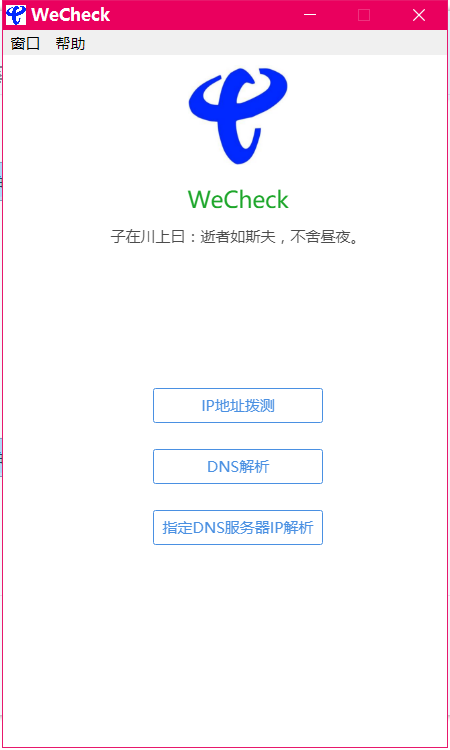

-
- Basic info. 基本信息
- 个人信息: 张磊 / 男 / 25岁
- 学校/专业: 湘潭大学/软件工程
- 英语水平: CET-4
- 工作年限: 4年
- 期望职位: Java高级程序员
-
- Experience. 项目与工作经验
亚信科技(南京)有限公司（2015.7 - 至今）
-
电信4G管理平台
项目介绍：此项目是中国电信集团提供给全国各省市对营业员，各渠道销售员信息管理，权限控制的集约平台、管理门户主要包含员工管理，组织管理，权限管理，角色管理，公告管理，终端资源管理、号卡资源管理等，是一个对接各省份电信业务系统的集约CRM系统
个人职责：2015年参加 中国电信4G管理平台 的开发工作，完成了界面开发工作，且开放API接口对外提供HTTP服务， 通过线程池，自定义注解，实现异步化，对敏感操作进行异步短信或邮件通知，记录操作日志等
项目收获：成长为独立的系统管理负责人，对应需求讨论，接口开发，功能优化，bug修复，系统运维技术支撑等工作；其他临时性任务，SQL脚本提供，外围系统对接等等
-
网络监测工具-windows桌面应用
项目介绍：为支持项目容灾前期准备工作，方便各省快速检查网络,DNS等，支持31个省容灾校验准备工作，方便营业员快速检查，并自动生成校验文件到本地桌面。
个人职责：独立负责需求确定，界面设计，业务功能开发等
项目收获：学习了使用采用node.js、Electron快速开发构建桌面应用
项目周期：1个月
 -
中国电信3.0微服务
项目介绍：对现有项目进行微服务升级改造
个人职责：利用springBoot/springCloud搭建Demo微服务工程,对Feign和ribbon进行功能增强开发，参加了订单中心微服务的开发工作，主要负责日志切面，数据路由切面等功能开发
项目收获：熟悉了Euruka/hystrix/zuul/feign/ribbon等中间件的使用。
-
分布式调度中心
项目介绍：现有各系统模块定时任务实现方式不一且不具备统一管理界面，不方便进行统一管理
个人职责：针对甲方需要，在对目前开源框架elastic-job、xxl-job以及公司自研的调度框架进行分析比较后，引入xxl-job分布式框架，并对其中功能进行相应改造开发工作,增加定时任务自动扫描注册功能，改用Druid连接池，增加euruka服务注册中心，对外提供API服务，支撑各微服务中心，实时增加、启用、停用定时任务
项目收获：解决了连接自研数据库后，带BLOB字段的数据表，通过dbproxy向数据库写入数据时，BLOB字段存储的内容不正确等问题
-
QQ群机器人
项目介绍：日常运维工作中，为方便测试组，31个省的联调工作，需要对测试工号进行各种授权，密码重置，解锁等一系列操作
个人职责：在对日志运维工作总结，归纳需要对外提供的服务接口，利用酷Q机器人接受联调群指令，调用测试环境RestFul接口服务工程，实现自动运维工作
项目收获：很大幅度的提升了各省联调效率，节约了大量工作时间
-
- Skill. 技能清单
后端
-
专业技能
具有扎实的Java基础，对面向对象编程有深刻的理解，熟练掌握java IO流、集合、多线程、反射，泛型，注解，网络编程等基础开发技术。
熟练使用常用的java集合类以及常用集合的源码，熟悉多线程以及同步容器以及并发容器的使用，AQS,CAS,lock,volatilte,synchronized等。
对Java虚拟机、JMM、垃圾收集机制、GC算法、JVM常用配置参数、GC参数、classLoader、锁机制、JVM故障分析，jmap,jstack等jdk提供的工具命令，性能监控工具(java visualVM)，JVM参数调优有一定了解。
熟悉java常用的设计模式以及常用算法以及常用的数据结构。
熟练掌握SSM等框架使用，熟悉spring IOC ,springAop springs事物核心源码,阅读过springmvc请求流程核心源码以及springboot自动装配原理。
熟练掌握SQL语言，熟练使用Oracle、MySQL数据库进行javaEE开发，基本的MySQL性能调优，SQL优化等。
熟练使用Redis，MQ，Springboot,Springcloud等常用微服务框架技术，了解常用的高并发解决方案。
熟练使用dubbo框架，了解过它的底层实现，可灵活配置服务。
Web前端
-
HTML / CSS
能够编写语义化的 HTML，模块化的 CSS，完成较复杂的布局
能够运用前端UI框架编写复杂布局页面，例如LigerUi,layerUi,bootstrap等
-
JavaScript
熟悉原生Javascript，熟悉jQuery等类库编码
能运用模块化、面向对象的方式编程
了解 vue.js LigerUi layUI 的使用
其他
-
遇到开发难题，能认真分析问题难点，并耐心解决，遇到紧急开发任务，按质按量完成
学习能力强，掌握 eclipse、webstorm 、Vim Git 等开发工具的使用
开发兴趣强烈，有良好英文文档阅读习惯

张磊的简历
"Coding makes our life colorful."
-
- Contact. 联系方式
- 邮箱: 675597092@qq.com
- 电话: 15200345227
-
- Application. 应聘岗位
- Java工程师
-
- Tech. 技能点
JavaScriptHTMLCSSSQLnodejsJava
4年开发经验，擅长Java开发，熟练掌握Java开发工具和应用系统的各种开发方法
目前正在寻找Java工程师岗位，希望借此机会为贵司献上我的一点绵薄之力！